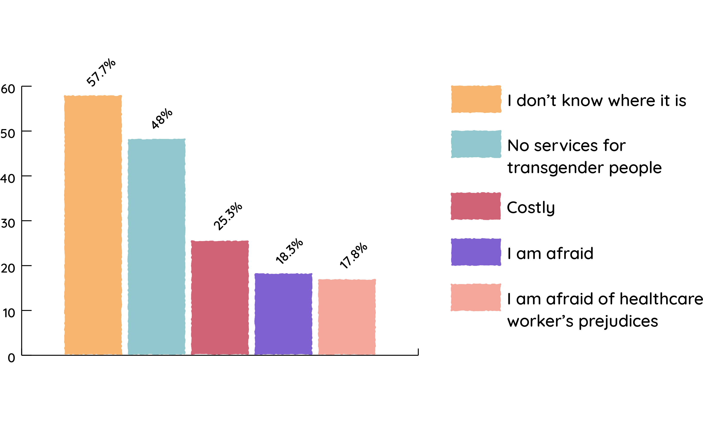

Community
Chapter 03
In recent years, equality for the LGBTQ community transitions from being a privilege to basic human rights. As Vietnam is still in the process of unlearning years of homophobia, there will be people who love, and there will still be people who hate. Chapter 03 will give the readers a peak into the lives of queer Vietnamese people. Additionally, chapter 03 will provide inforgraphics and statistics regarding the LGBTQ community in Vietnam.
Table of Contents


Click to navigate
Love
Relationships
Mối Quan Hệ

In Vietnam, there is a common misconception where many people think true love does not exist in the queer community. Unlike heterosexual couples, queer couples do not have any “obligations” like marriage and children to hold them back once the love dwindles. As a precaution against heartbreaks, many queer people in Vietnam chose not to love too deeply. To that point, how can you enjoy the moment if you are constantly worried about the future? If you want someone to reciprocate your love, then you have to give that love to them in the first place.
In fear of family and society’s prejudice, when two queer people love each other, they have to split their time between being in love and having to hide that love. You only live once, so live for yourself. If the love and connection is strong enough, it will persevere. It it isn’t, appreciate it as an experience. This is a challenge for all relationships, not just for queer people. Be content with that you have! Allow yourself new experiences, meet new people, give your attention to people who deserves it.
“If you don't love yourself, how in the hell you gonna love somebody else?”
— RuPaul
Love comes hardest for transgender people. Due to society's pressure to have a family, many heterosexual partners often cannot commit to be in a relationship with a transgender person. For love, transgender people have to make many sacrifices: accepting to be someone’s secret partner, having no power in the relationship, etc. But remember, you have to love yourself before you can love anybody else. If something was meant to be for you, then all you have to be is you to be you to receive it.

Ally
Đồng Minh

Ally is a term used for people who support equality for the LGBTQ community. Typically, people think ally refer to non-LGBTQ people who want to show their support. Though, ally can also be used for people in the LGBQT community to support each other (i.e. you can be gay and also be an ally for transgender people). Everyone benefits from the support of ally, as it is our collective efforts to create a more educated and understanding society. As Dr. Martin Luther King, Jr said, “Injustice anywhere is a threat to justice everywhere.” Here are some simple things you can do to be an ally:
Learn more about the LGBTQ community
The simplest way to be an ally is to be knowledgable about the LGBTQ community. Especially if you are heterosexual and do not get discriminated against, you should use your platform to protect queer folks. Because you want to show support for marginalized groups that you do not embodied, you will not be able to understand their experiences. So, learn more about their experiences, stories, laws, and policies. When you understand and empathize with the marginalized group that you want to support, your actions and words will be more effective.
Use correct pronouns
This is especially important for transgender and non-binary folks. Most transgender people want to be recognized and addressed according to the gender they desired. For example, if a biological man transitioned into a woman, she would want to be addressed as she/her. If you do not know how to properly address someone, the simplest way is to ask what they want to be addressed as. This can be a bit difficult to get used to, especially if you have known that person for a long time - but this is really important because when you addressed someone by their desired pronouns, you are making a statement that you welcome and support their identity.
Encourage support
Participating in events, advocating for protection law, attending pride parades are some of the things you can do to encourage support for the LGBTQ community. When you hear anyone spreading negative or inaccurate information about the queer community, use this as an opportunity to inform them with the correct information. Especially if you are heterosexual, your support will be a great contribution in promoting equality for the queer community.


Discrimination
"No one is born hating another person because of the color of his skin, or his background, or his religion. People must learn to hate, and if they can learn to hate, they can be taught to love, for love comes more naturally to the human heart than its opposite.”
— Nelson Mandela
Environment
Môi Trường

Education
Outside of home, schools are where most children and youth generally spend the most of their time developing themselves as well as their social circle. Sadly, queer students often have to deal with a lot of violence and bullying in this environment. Many queer students are victimized by assaults and discriminations on a day to day basis from their peers. Moreover, since there are no laws protecting students against discrimination, many students have to drop out of school due to unsafe learning environment.
Because Vietnam’s education program is controlled by the government, even for private schools, education on sexual diversity and gender identity is not included in the formal curriculum. From teachers to counselors, queer students have nowhere to look for support when they are at school. Therefore, it is very important for everyone to push for sex education into the formal curriculum, as well as sensibility training on sexual diversity for teachers and educators. Both teachers and students need to be taught to respect diversity and eliminate discrimination. Education is a very important foundation for any child's development, and queer students have to right to have a safe and welcoming learning environment like all other kids.
Healthcare
Although the government has allowed people to legally change their gender, sex change surgeries have not been legalized in Vietnam. Currently, Vietnam has sufficient facilities and technical expertise to meet all of the requirements related to transgender surgeries: breast implants, vaginoplasty, facial feminization, voice therapy, etc. However, Vietnam has not legalized these surgeries for transgender people yet. Many transgender people have to travel all the way to Thailand to receive these surgeries, a solution that is both expensive and dangerous. Many transgender people have to save up enough money to get these surgeries abroad, and then have to go back immediately afterwards because they cannot afford to stay too long in the hospital. Lack of recovery and doctor’s supervision have been common reasons why there are many botched surgeries for transgender people in Vietnam.
A research done by iSEE has shown that the two biggest reasons why transgender people do not seek medical services in Vietnam are either because they do not know where it is, or the healthcare facilities do not offer any services for transgender people. The next reasons are because they are scare for themselves, as well as scare of the healthcare worker’s prejudice. It is so unfair for queer folks to put themselves in danger in order to avoid curiosity and prejudice from medical workers. Healthcare facilities in Vietnam need to take action to improve the safety of LBGTQ folks when accessing health services. Additionally, health departments need to offer information and counseling on transgender related health services (medication, hormone therapy, and surgery) by trained medical staff.
Question: Have you ever seek medical, psychological assistance for transgender people? If never, why?
Employment
Transgender people are the most disadvantaged when looking for jobs. Many employers refuse to accept transgender people based on their appearances. Even if the transgender person is perceived as “passing”, employers still make it very difficult when their names and sex do not match the paperwork. In Vietnam, one of two transgender people applying for a job will be denied even if they have enough qualifications. Some people have to hide their sexual orientation or gender identity in order to find a job. Even after they are hire, the psychological pressure of hiding their sexuality makes a big impact on their productivity. Currently, Labour Law in Vietnam does not have any laws preventing discrimination based on sexual orientation and gender identity.
Luật Bảo Vệ
Protection Laws

Vietnam currently has no laws to protect queer people from discrimination. A queer person may be fired, denied work, refused housing because of the sexual orientation. Moreover, sexual abuse against LGBTQ people have not been addressed by the laws. Vietnam only recognizes sexual abuse when there are non-consenting intercourse between a man and a woman. Therefore, unregistered male-to-female transgender people do not have enough legal basis to prosecute their attackers because on paper, they are still registered as male.
In a study done by the iSEE, only 2% of people reported to the police or local authorities when discrimination occurred. The most common reasons that prevent them from reporting is because they think the incident is too minor (63.7%), they do not believe the problem can be resolved (46.7%), they do not want to disclose themselves (26.3%), or they fear of reaction from the police (17.7%). Of those 2% who reported, only 14.3% of cases were completely solved.

The statistics above show that any protection laws for LBGTQ people in Vietnam are inaccessible and ineffective. Civil rights for queer people need to be recognized by the government just like everybody else, same-sex couples need to have legitimate rights (marriage, adoption, etc.), and the government needs to put out anti-discrimination laws to protect LGBTQ people.
Infographic
Infographic about Vietnam's LGBTQ community
Timeline
Lịch Sử
Discrimination
Phân Biệt Đối Xử
Question: During your encounter with family members, have you ever been through any of the following situation because you are deemed as LGBTQ?

* Transgender group has a highest experience rate in all discriminatory acts compared to the homosexual and bisexual groups.
Coming out
Công Khai
Percentage of respondents who have come out with families, neighbors, friends, colleagues
Question: How many people have you come out as LGBTQ to?
LGBTQ Rights
Quyền LGBTQ
Currently, Vietnam does not have any laws to protect
queer people from:
Community

LGBTQ community in Vietnam: